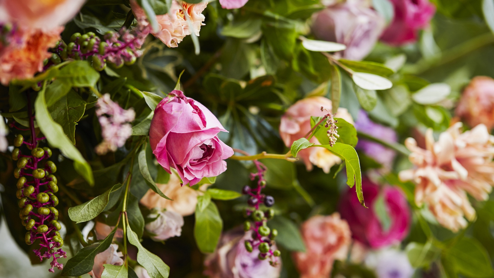

Like many people, I want cut flowers to grace my home at all times, and in most instances, a simple jar of in-season blooms feels like enough. But sometimes—be it a birthday, holiday, or with congratulatory intent—a flower arrangement is called for.
 What should you look for when you shop for flowers? First and foremost, seek out a variety of textures. Second, find variety in the shape of the bloom, and third, seek variety in color. For example: The ranunculus shown above are rough and circular with white bodies and purple edges, the daffodils are smooth and star-shaped with classic yellow centers, and the pale pink sweet peas are dainty and reminiscent of butterflies.
Assess your flowers and greenery and arrange them into four groups. (You’ll start your arrangement by placing the strongest, thickest stems, and end with the most delicate.)
Begin with the stiffest, woodiest materials, to make a general frame you can use to support weaker stems.
Add large-leafed substantial greens. Fill empty pockets in the branchy frame.
Reach for your “foundation” flowers with large blooms next.
Next, reach for the “focal” blooms.
As a last step, reach for the “floaters” that have gestural qualities and delicate stems. They need to go in last, both for visual and practical purposes.